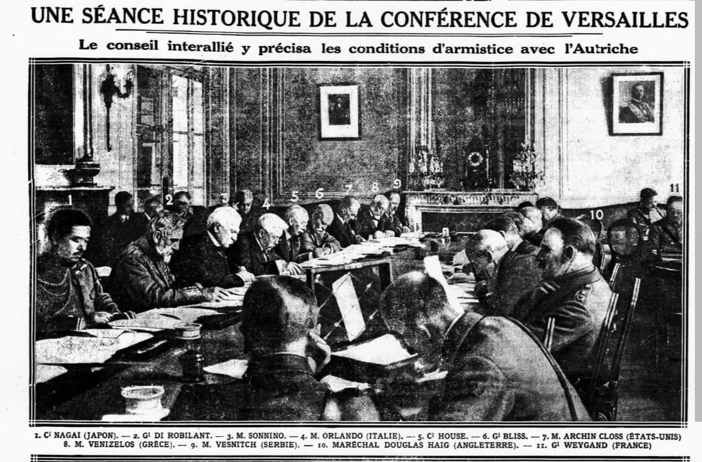
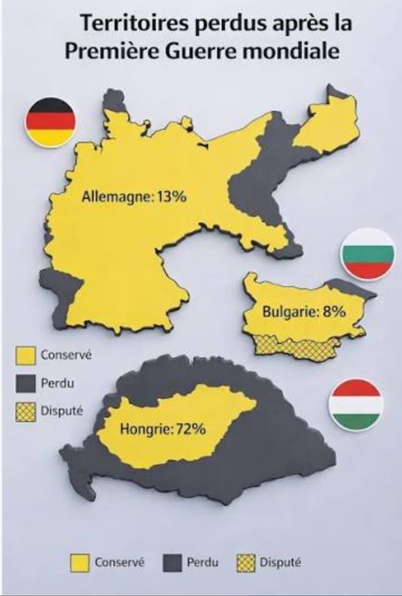
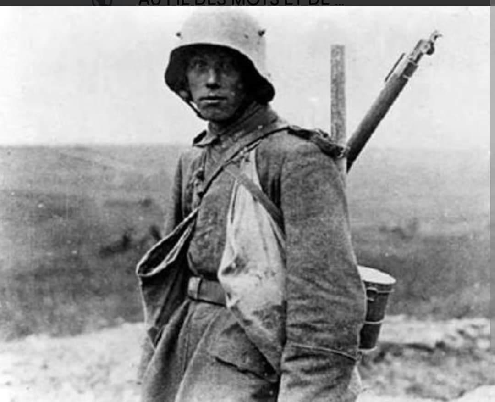
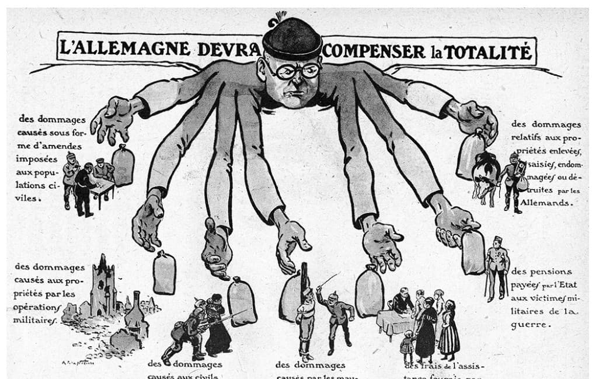
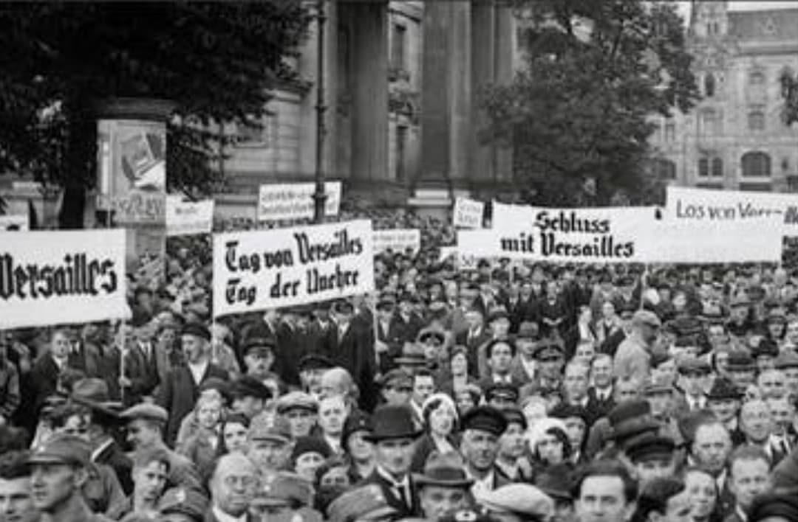

Traité de Versailles
1919 – Un accord pour la paix, une colère pour l’avenir
Un traité pour reconstruire… et pour diviser
Signé le 28 juin 1919 dans la galerie des Glaces du château de Versailles,
le traité de Versailles met officiellement fin à la Première Guerre mondiale.
Il impose à l’Allemagne des conditions extrêmement sévères : pertes territoriales,
restrictions militaires, réparations financières colossales.
Destiné à empêcher une nouvelle guerre, il devient paradoxalement l’un des moteurs
de la montée du nazisme et des tensions qui mèneront à la Seconde Guerre mondiale.
1. L’Europe en 1919 : un continent bouleversé

L’Europe sort de la guerre profondément transformée : empires effondrés, frontières redessinées,
nouveaux États créés (Pologne, Tchécoslovaquie, Yougoslavie). Le traité de Versailles
cherche à stabiliser le continent, mais crée aussi de nombreuses frustrations.
2. Les clauses territoriales : une Allemagne amputée

L’Allemagne perd environ 13% de son territoire et 10% de sa population :
- Alsace-Lorraine rendue à la France
- Posnanie et corridor de Dantzig attribués à la Pologne
- Prusse orientale isolée du reste du pays
- Sarre placée sous administration internationale
- Perte de toutes les colonies allemandes
Ces amputations territoriales sont vécues comme une humiliation nationale.
3. Les clauses militaires : une armée réduite au silence

Le traité impose des restrictions militaires drastiques :
- Armée limitée à 100 000 hommes
- Interdiction des chars, avions, sous-marins
- Flotte réduite à quelques navires
- Démilitarisation totale de la Rhénanie
L’objectif est d’empêcher toute nouvelle agression allemande.
Mais ces mesures alimentent un profond ressentiment.
4. Les réparations : une dette écrasante

L’Allemagne doit payer des réparations colossales pour les destructions causées par la guerre.
Le montant fixé en 1921 atteint 132 milliards de marks-or, une somme gigantesque.
Cette charge financière provoque une crise économique majeure,
dont l’hyperinflation de 1923 est l’un des symboles les plus marquants.
5. La Société des Nations : un espoir fragile

Le traité crée la Société des Nations (SDN), première organisation internationale
destinée à maintenir la paix.
Mais ses moyens sont limités, et l’absence des États-Unis affaiblit considérablement son influence.
6. Les réactions en Allemagne : colère, humiliation et revanche

En Allemagne, le traité est surnommé le “Diktat de Versailles”.
Il est perçu comme une injustice imposée par les vainqueurs.
Hitler exploitera cette humiliation dans sa propagande,
faisant du rejet du traité l’un des piliers de son ascension politique.